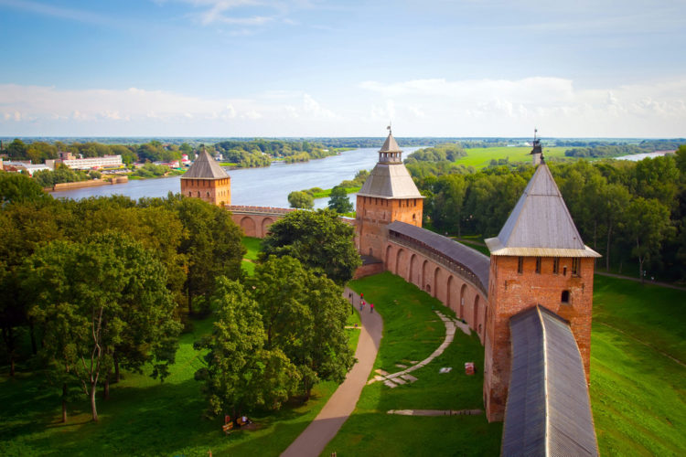

14. Новгородский кремль (Новгород)

Новгород — старейший город России, древний ремесленный и торговый центр, звено, связывающее Русь с Европой. Город и сегодня приглашает гостей посмотреть на свои удивительные достопримечательности. Среди них – Новгородский кремль или, как его называли изначально, «детинец». Это каменное сооружение на берегу Волхова в XI веке построил князь Ярославль. Впервые о нем упомянули летописи 1044 года. Но те первоначальные постройки не сохранились. Позже кремль перестраивался и расширялся несколько раз. Сегодня длина его стен приближается к полутора километрам. Сейчас в кремле сохранено 9 башен. Самая высокая из них – Кокуй. За крепостными стенами расположились различные архитектурные памятники. Софийский собор, возле которого раньше все горожане собирались на вече, Грановитая палата и Софийская звонница, которые привлекают сегодня любопытных туристов и людей, интересующихся историей русского зодчества и государства в целом. Территория Новгородского кремля – любимое место отдыха новгородцев и гостей старинного города. Здесь все приспособлено для отдыха: кафе, игровые площадки для детей, резные лавочки. Внутри кремля регулярно устраиваются тематические экспозиции, посвященные разным событиям российской истории. Со смотровой площадки можно сделать панорамную съемку города.